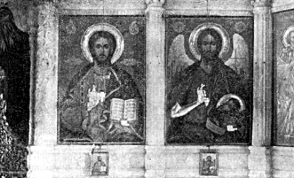

Historia · 1944
Detalles de la iglesia de la Santa Madre de Dios
13 fotografías del interior de la catedral de la Santa Madre de Dios. Más en Templos cristianos.

El interior de la Santa Madre de Dios - la iglesia catedral. A la izquierda, el púlpito en talla profunda; a la derecha, junto a la columna más cercana al altar, el trono episcopal.

La nave norte del templo con el púlpito y
el trono real.

La nave sur con el trono episcopal.

El púlpito, tallado artísticamente en madera en 1838, y la escalera junto a él.

El trono episcopal en la iglesia de la Santa Madre de Dios,
elaborado en 1838.

El trono real en el templo.

La nave central de la iglesia de la Santa Madre de Dios con el iconostasio y el trono episcopal.

La parte superior de la nave central del templo con una cúpula ciega en el techo.

La parte superior del iconostasio (en talla profunda) se hizo en 1838 en madera de nogal, y la inferior en mármol blanco.

El lado oeste con la tribuna de mujeres (en la galería).

Vista de las columnas y el muro de la nave central del templo (lado norte).


El lado derecho del iconostasio de mármol con los iconos de Cristo Salvador y San Juan Bautista.

El lado izquierdo del iconostasio de mármol con los iconos de la Santísima Madre de Dios y de su Natividad.